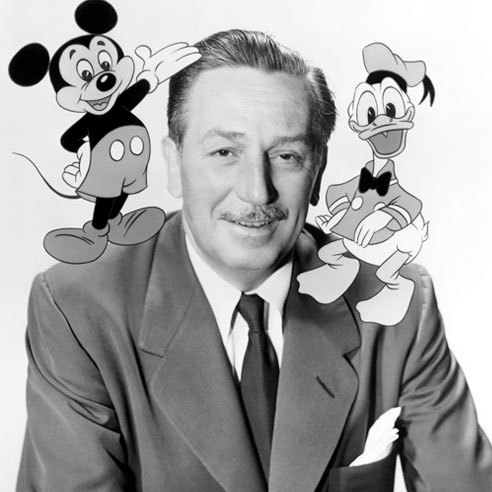

Mais sobre a Pixar
Brinquedos com atitudes e gestos de humanos. Simpáticos monstros que trabalham em uma usina de energia
obtida através dos berros das crianças que assustam. Um rato que vira o maior chefe de cozinha do mundo.
Um simpático e carismático peixinho fugitivo. Carros que ganham vida e emoções. Todas estas situações
surreais só foram possíveis graças a PIXAR ANIMATION STUDIOS, admirada não só pela qualidade técnica de
suas animações em computador, mas também por suas histórias com roteiros universais, cheios de aventura
e personagens prá lá de carismáticos que conquistaram milhões de crianças e adultos no mundo inteiro.
Quando o nome PIXAR aparece na tela, provoca nas pessoas a mesma sensação que a marca Disney.
O estúdio de animação mais cobiçado e admirado do mundo teve suas origens no ano de 1979, na divisão de
animação e efeitos especiais da Lucas Film, empresa fundada pelo aclamado diretor George Lucas (de
filmes como Guerra nas Estrelas e Indiana Jones). A história começou a mudar em 1984 quando John
Lasseter deixou seu emprego de animador na Disney, para se unir ao grupo de animadores e efeitos
especiais da Lucas Film. No dia 3 de fevereiro de 1986, Steve Jobs, dono e fundador da Apple, comprou a
divisão de computação gráfica da Lucas Film (conhecida então como Industrial Light Magic) por US$ 10
milhões, e fundou a PIXAR ANIMATION STUDIOS, juntamente com John Lasseter, o engenheiro Alvy Ray Smith e
o matemático Ed Catmull, um talentoso especialista em computação gráfica, injetando novo ânimo e mais
dinheiro na empresa que andava meio combalida. O novo nome do estúdio é uma combinação das palavras
“pixels” e “art”, que é justamente o que pretende a animação, fazer arte através de pixels, unidades
elementares da imagem gráfica. Inicialmente a especialidade era a criação de hardware específico para
computação gráfica, como o Pixar Image Computer. Para incentivar as vendas do produto, John Lassetter
passou a criar pequenas animações e demonstrar como era eficiente o produto através do material
apresentado. O passou seguinte foi produzir curtas-metragens e comerciais de televisão para marcas
famosas como Tropicana, Trident, Life Savers, Listerine, Volkswagen, California Lottery e Pillsbury,
além de ser a responsável pela criação dos novos logotipos da IBM e da Paramount.
Mais sobre a Disney
A The Walt Disney Company foi fundada em 1923 com o nome de Disney Brothers
Cartoon Studio. Os irmãos Walt e Roy Disney eram sócios iguais e começaram produzindo as Comédias de
Alice.
empresa passou por dificuldades financeiras depois do encerramento da série e mudou seu nome para The
Walt Disney Studio em 1926. Oswaldo, o Coelho Sortudo foi lançado em seguida, mas o estúdio perdeu seus
direitos logo após sua primeira temporada.
A sorte começou a mudar com a criação do personagem Mickey Mouse em 1928. O camundongo se tornou o
mascote da companhia e, um ano depois de seu lançamento, a parceria entre os irmãos deu lugar à Walt
Disney Productions Ltda e mais três outras empresas. Dez anos mais tarde, elas se reuniriam na Walt
Disney Productions

Em 1937, os estúdios fizeram o primeiro longa de animação: A Branca de Neve e os Sete Anões. Três anos
depois, com os grandes rendimentos do filme, a empresa se mudou para a Califórnia e se tornou pública.
Já em 1941, enquanto os espectadores assistiam a Pinóquio, Fantasia e Dumbo, os animadores organizavam
uma grande greve. Nesse mesmo ano, os estúdios produziram filmes de propaganda para os Estados Unidos
devido à Segunda Guerra Mundial.
Sete anos depois de sua produção, A Branca de Neve volta a render dinheiro à Disney e salva a empresa. A
partir daí, os relançamentos se tornam um padrão de geração de renda. Em 1954, foi criado o programa
Disneyland na rede ABC e as constantes mudanças de distribuidora foram solucionadas com a criação da
Buena Vista Distribution Company. A empresa já havia utilizado os serviços da Columbia Pictures, United
Artists e RKO Radio Pictures.
Em 1966, Walt Disney morre de câncer no pulmão. Com a falta de liderança, a companhia começa um lento
declínio, que culmina com a tentativa de acionistas de comprar a empresa através do controle majoritário
de suas ações. Um ano depois da morte de Walt, começa a construção do The Walt Disney Resort, na
Flórida, aberto em 1971 – mesmo ano da morte de Roy Disney. Antes disso, a Disneylândia, na Califórnia,
já funcionava desde 1955.

Os anos 80 começaram com novidades para a companhia. A Disney faz sua primeira co-produção, com a
Paramount Pictures – Popeye. Ainda em 1980, a Walt Disney Home Entertainment as primeiras fitas de vídeo
à venda. Três anos depois, nasce o Disney Channel.
A partir de 1983, mudanças na administração do conglomerado dão ênfase à expansão dos parques temáticos.
Um exemplo disso é a inauguração do Tokio Disneyland Resort, primeiro empreendimento fora do país.
Quatro anos depois, teve início o projeto da Euro Disney, aberta ao público em 1992, na França.
Outra mudança de nome ocorre em 1986, de Walt Disney Productions para o definitivo The Walt Disney
Company. No ano seguinte, a primeira loja da Disney é aberta na Califórnia. Já em 1991, A Bela e a Fera
é a primeira e única animação a concorrer ao Oscar de Melhor Filme.
1992 marca a entrada da companhia no ramo de esportes. A empresa cria a equipe de hóquei Mighty Ducks of
Anaheim por causa do lançamento do filme The Mighty Ducks. O time disputa seu primeiro jogo em casa em
1993, na recém-construída Anaheim Arena. Já em 1997 chega a vez do beisebol. A Disney compra a equipe
California Angels, que se torna Anaheim Angels – a intenção era atrair turistas para a região da
Disneylândia. O time é vendido em 2003 e em 2005 acontece o mesmo com a equipe de hóquei.
Voltando ao ramo cinematográfico, o conglomerado compra a Miramax Films em 1993. Em 1996, a Disney
adquire o grupo ABC. No ano seguinte são lançados os primeiros filmes em DVD. Neste período, estrearam
os clássicos Toy Story, Pocahontas e O Corcunda de Notre Dame.
A partir dos anos 2000, o conglomerado se estrutura na TV a cabo – hoje é dona de 11 canais, como a
ESPN, A&E e History Channel – e no rádio, com 72 emissoras. Além disso, compra a Pixar Animation Studios
por US$ 7 bilhões em 2006 e anuncia interesse em adquirir a Marvel Entertainment. Enquanto isso, alguns
dos grandes sucessos da companhia vieram da TV, como a série e o filme Hannah Montana e os três longas
High School Musical.
Nas telonas, a Disney lançou, entre outros, Tarzan, Monstros S.A., Procurando Nemo, a sequência Piratas
do Caribe, Os Incríveis, O Galinho Chicken Little, As Crônicas de Nárnia – o Leão, a Feiticeira e o
Guarda-Roupa, Ratatouille e Up – Altas Aventuras. Nesta sexta-feira (11), chega aos cinemas A Princesa e
o Sapo, feito com técnicas tradicionais de animação, na contramão das tecnologias digitais.
Productions